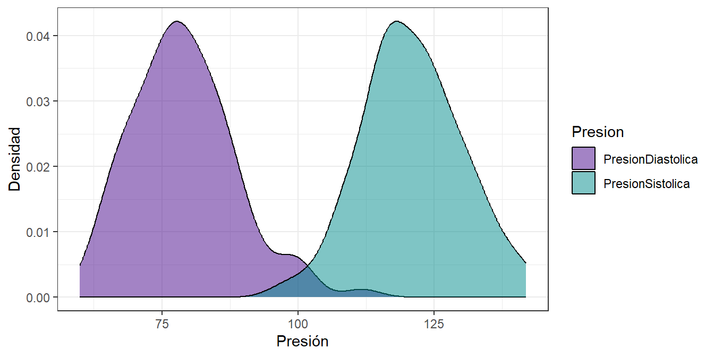
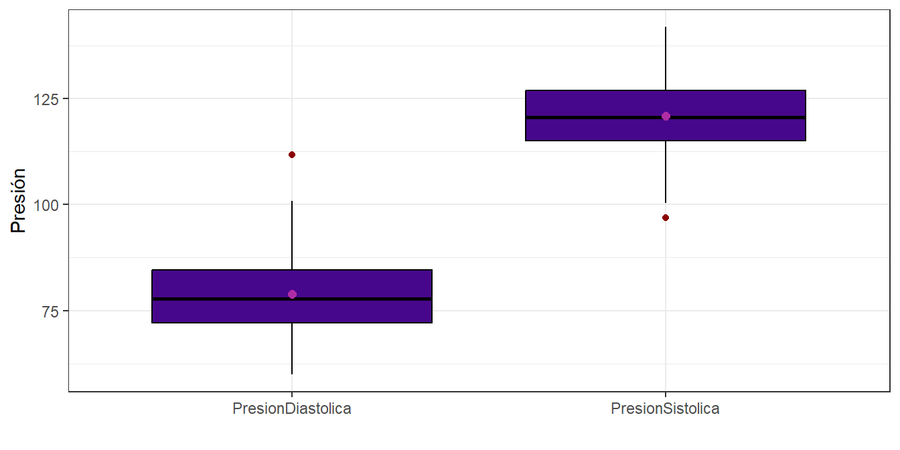
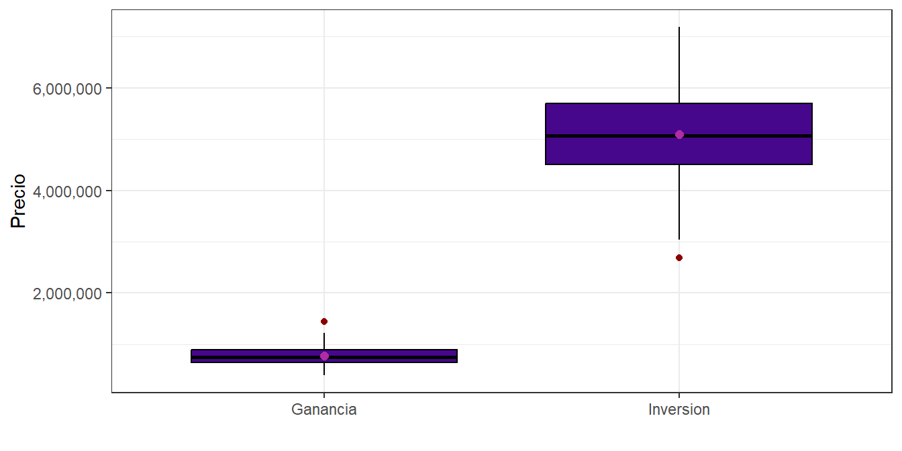
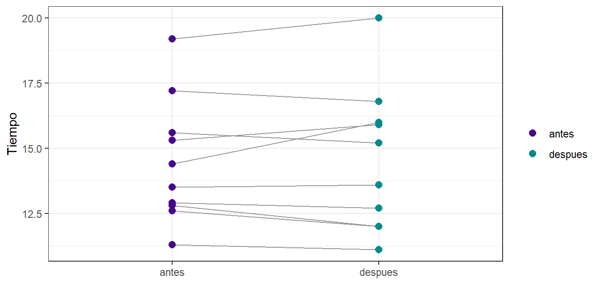

Capítulo 2 Estadística paramétrica y no paramétrica
Corresponde a la sección 4 del libro del profesor. Acá la pregunta de fondo siempre es la misma: dos o más grupos, una variable numérica, y queremos saber si la diferencia que vemos entre ellos es real o es del azar del muestreo. Lo que cambia de una sección a otra son tres cosas: si los grupos son independientes o pareados, si se cumple normalidad, y si se cumple homogeneidad de varianzas.
library(tidyverse)
library(readxl)
library(effsize)
library(nortest)
library(car)
library(rstatix)
library(openintro)
library(moments)2.1 Presión sistólica contra diastólica (independientes, paramétrica)
Los datos vienen en formato largo: una columna dice de qué presión se trata y la otra trae el valor. Para las pruebas que reciben dos vectores hay que separarlos.
dfs <- df %>%
filter(Presion == "PresionSistolica") %>%
pull(Valores)
dfd <- df %>%
filter(Presion == "PresionDiastolica") %>%
pull(Valores)2.1.1 Ejercicio 2.1. Análisis exploratorio de los datos de presión
Enunciado. Realiza el análisis exploratorio del conjunto de datos.
Sección 4.1 del libro del profesor
Solución.
df %>%
group_by(Presion) %>%
summarise(n = length(Valores),
prom = mean(Valores),
ds = sd(Valores),
varianza = var(Valores),
mediana = median(Valores),
RIC = IQR(Valores),
min = min(Valores),
max = max(Valores),
asimetria = skewness(Valores),
curtosis = kurtosis(Valores))## # A tibble: 2 × 11
## Presion n prom ds varianza mediana RIC min max asimetria
## <fct> <int> <dbl> <dbl> <dbl> <dbl> <dbl> <dbl> <dbl> <dbl>
## 1 PresionDiastol… 100 78.9 9.48 89.8 77.8 12.4 59.9 112. 0.639
## 2 PresionSistoli… 100 121. 9.13 83.3 121. 11.9 96.9 142. 0.0605
## # ℹ 1 more variable: curtosis <dbl>df %>%
ggplot(aes(x = Valores, fill = Presion)) +
geom_density(alpha = 0.5, color = "black") +
scale_fill_manual(values = c("#47078c", "#008B8B")) +
labs(x = "Presión", y = "Densidad") +
theme_bw()
df %>%
ggplot(aes(x = Presion, y = Valores)) +
geom_boxplot(fill = "#47078c", color = "black", outlier.color = "darkred") +
stat_summary(fun = mean, geom = "point", shape = 20, size = 3, color = "#b02ca5") +
labs(x = "", y = "Presión") +
theme_bw()
Son dos grupos de 100 mediciones cada uno. La sistólica promedia 120,90 y la diastólica 78,95, o sea unos 42 mmHg de diferencia, que es un valor grandísimo comparado con la dispersión de cada grupo (9,13 y 9,48). En los dos grupos la media y la mediana casi coinciden, la asimetría está cerca de cero y la curtosis cerca de 3, que es esperada dado los datos normales. Las cajas quedan claramente separadas, así que la prueba formal debería confirmar lo que ya se ve.
2.1.2 Supuesto de normalidad
##
## Asymptotic one-sample Kolmogorov-Smirnov test
##
## data: scale(dfs)
## D = 0.058097, p-value = 0.8884
## alternative hypothesis: two-sided##
## Asymptotic one-sample Kolmogorov-Smirnov test
##
## data: scale(dfd)
## D = 0.057927, p-value = 0.8905
## alternative hypothesis: two-sided##
## Shapiro-Wilk normality test
##
## data: dfs
## W = 0.99388, p-value = 0.9349##
## Shapiro-Wilk normality test
##
## data: dfd
## W = 0.97289, p-value = 0.03691##
## Lilliefors (Kolmogorov-Smirnov) normality test
##
## data: dfs
## D = 0.058097, p-value = 0.5575##
## Lilliefors (Kolmogorov-Smirnov) normality test
##
## data: dfd
## D = 0.057927, p-value = 0.5622Los tres contrastan lo mismo: H0 dice que los datos vienen de una normal, así que un p-valor grande es lo que queremos. En la sistólica los tres coinciden en no rechazar. En la diastólica, Kolmogorov-Smirnov da p = 0,8905 y Lilliefors p = 0,5622, pero Shapiro-Wilk da p = 0,0369, que a un 5% sí rechaza.
Cuando los tests se contradicen hay que mirar por qué. Shapiro-Wilk es el más potente de los tres, o sea que con n = 100 detecta desviaciones pequeñas que a los otros se les escapa. Pero potencia alta también significa que con muestras grandes rechaza por desviaciones que no tienen importancia práctica. Aquí la asimetría y la curtosis están dentro de lo esperado y el histograma se ve simétrico, así que la desviación es leve y el t-test, que es bastante robusto con n = 100 por grupo, se puede aplicar sin problema.
2.1.3 Ejercicio 2.2. Verificación de var.test con el teorema de razón de varianzas
Enunciado. Usando el teorema de razón de varianzas verifica la salida de la función var.test con los datos de presión arterial.
Sección 4.1 del libro del profesor
Solución. Primero se obtiene la salida de R, que es la que hay que reproducir a mano:
##
## F test to compare two variances
##
## data: dfs and dfd
## F = 0.92784, num df = 99, denom df = 99, p-value = 0.7102
## alternative hypothesis: true ratio of variances is not equal to 1
## 95 percent confidence interval:
## 0.6242897 1.3789878
## sample estimates:
## ratio of variances
## 0.9278405El teorema dice que si dos muestras independientes vienen de poblaciones normales, el cociente de las varianzas muestrales sigue una distribución F:
\[F = \frac{S_1^2}{S_2^2} \sim F_{n_1-1,\; n_2-1}\]
con hipótesis
\[H_0: \sigma_1^2 = \sigma_2^2 \qquad \text{vs} \qquad H_1: \sigma_1^2 \neq \sigma_2^2\]
Como la prueba es de dos colas, se rechaza si \(F < F_{\alpha/2}\) o si \(F > F_{1-\alpha/2}\).
n1 <- length(dfs); n2 <- length(dfd)
s1_2 <- var(dfs); s2_2 <- var(dfd)
F_calc <- s1_2 / s2_2
gl1 <- n1 - 1
gl2 <- n2 - 1
F_inf <- qf(0.025, gl1, gl2)
F_sup <- qf(0.975, gl1, gl2)
p_val <- 2 * min(pf(F_calc, gl1, gl2), pf(F_calc, gl1, gl2, lower.tail = FALSE))
IC_inf <- F_calc / F_sup
IC_sup <- F_calc / F_inf
tibble(s1_2, s2_2, F_calc, gl1, gl2, F_inf, F_sup, p_val, IC_inf, IC_sup)## # A tibble: 1 × 10
## s1_2 s2_2 F_calc gl1 gl2 F_inf F_sup p_val IC_inf IC_sup
## <dbl> <dbl> <dbl> <dbl> <dbl> <dbl> <dbl> <dbl> <dbl> <dbl>
## 1 83.3 89.8 0.928 99 99 0.673 1.49 0.710 0.624 1.38El F calculado a mano da 0,92784, con 99 y 99 grados de libertad, y el p-valor 0,7102.
Son exactamente los mismos números que da var.test. Como F cae entre 0,6728 y
1,4862, que son los valores críticos al 5%, no se rechaza H0. Además el intervalo de
confianza de la razón, [0,6243 ; 1,3790], contiene el 1, que nos lleva a que no hay evidencia de que las varianzas sean distintas.
2.1.4 Ejercicio 2.3. Teorema de la diferencia de medias
Enunciado. Usando el teorema de la diferencia de medias verifica la salida de la función t.test con los datos de presión arterial.
- Aplica el teorema de diferencia de medias con la distribución normal.
Sección 4.1 del libro del profesor
Solución. Con normalidad e igualdad de varianzas se puede aplicar el t-test clásico, que es la salida a reproducir:
##
## Two Sample t-test
##
## data: dfs and dfd
## t = 31.888, df = 198, p-value < 2.2e-16
## alternative hypothesis: true difference in means is not equal to 0
## 95 percent confidence interval:
## 39.36328 44.55275
## sample estimates:
## mean of x mean of y
## 120.90406 78.94604El teorema del t de Student con varianzas iguales usa la varianza combinada:
\[t = \frac{\bar{X}_1 - \bar{X}_2}{S_p \sqrt{\frac{1}{n_1} + \frac{1}{n_2}}} \qquad S_p = \sqrt{\frac{(n_1-1)S_1^2 + (n_2-1)S_2^2}{n_1 + n_2 - 2}} \qquad gl = n_1 + n_2 - 2\]
Cuando las muestras son grandes, la t se aproxima a la normal estándar y el estadístico se puede escribir directamente como
\[Z = \frac{\bar{X}_1 - \bar{X}_2}{\sqrt{\frac{S_1^2}{n_1} + \frac{S_2^2}{n_2}}}\]
Se hacen los dos y se comparan.
m1 <- mean(dfs); m2 <- mean(dfd)
Sp_2 <- ((n1 - 1) * s1_2 + (n2 - 1) * s2_2) / (n1 + n2 - 2)
Sp <- sqrt(Sp_2)
ee_t <- Sp * sqrt(1/n1 + 1/n2)
t_calc <- (m1 - m2) / ee_t
gl <- n1 + n2 - 2
ee_z <- sqrt(s1_2/n1 + s2_2/n2)
z_calc <- (m1 - m2) / ee_z
IC_inf <- (m1 - m2) - qt(0.975, gl) * ee_t
IC_sup <- (m1 - m2) + qt(0.975, gl) * ee_t
tibble(dif = m1 - m2,
Sp_2, Sp, ee_t, t_calc, gl,
t_critico = qt(0.975, gl),
p_t = 2 * pt(abs(t_calc), gl, lower.tail = FALSE),
ee_z, z_calc,
z_critico = qnorm(0.975),
p_z = 2 * pnorm(abs(z_calc), lower.tail = FALSE),
IC_inf,IC_sup)## # A tibble: 1 × 14
## dif Sp_2 Sp ee_t t_calc gl t_critico p_t ee_z z_calc z_critico
## <dbl> <dbl> <dbl> <dbl> <dbl> <dbl> <dbl> <dbl> <dbl> <dbl> <dbl>
## 1 42.0 86.6 9.30 1.32 31.9 198 1.97 6.20e-80 1.32 31.9 1.96
## # ℹ 3 more variables: p_z <dbl>, IC_inf <dbl>, IC_sup <dbl>La varianza combinada da 86,563 y el error estándar de la diferencia 1,3158, con lo que el
t manual queda en 31,888 con 198 grados de libertad, idéntico a la salida de t.test. El
valor crítico al 5% es 1,972, y como \(|31,888| > 1,972\) se rechaza H0.
Por la forma normal el estadístico da 31,890, prácticamente el mismo número. Esto pasa porque las dos varianzas son casi iguales y porque con 198 grados de libertad la t ya es indistinguible de la normal: el crítico de la t es 1,9720 y el de la normal 1,9600. La diferencia entre los dos caminos solo se nota cuando la muestra es pequeña.
La conclusión sustantiva: la presión sistólica promedio es 41,96 mayor que la diastólica, con intervalo de confianza al 95% de [39,36 ; 44,55]. El intervalo no contiene el cero, así que la diferencia es significativa.
2.1.5 Tamaño del efecto
##
## Cohen's d
##
## d estimate: 4.509702 (large)
## 95 percent confidence interval:
## lower upper
## 3.984821 5.034583La d de Cohen da 4,51, que se clasifica como grande (el corte convencional para “grande” es 0,8). Es importante separar las dos cosas: el p-valor dice que la diferencia existe, la d dice qué tan grande es. Aquí la diferencia entre los grupos es de más de cuatro desviaciones estándar, por lo cual se confirma que no es un hallazgo apenas detectable sino una separación muy grande.
2.2 Precios por tipo de cuenta, con varianzas distintas
df <- read_excel("Datos/datos_economia.xlsx")
df$`Tipo de cuenta` <- factor(df$`Tipo de cuenta`)
dfi <- df %>%
filter(`Tipo de cuenta` == "Inversion") %>%
pull(Precio)
dfg <- df %>%
filter(`Tipo de cuenta` == "Ganancia") %>%
pull(Precio)2.2.1 Ejercicio 2.4. Análisis exploratorio de los precios
Enunciado. Realiza el análisis exploratorio del conjunto de datos.
Sección 4.1 del libro del profesor
Solución.
df %>%
group_by(`Tipo de cuenta`) %>%
summarise(n = length(Precio),
prom = mean(Precio),
ds = sd(Precio),
varianza = var(Precio),
mediana = median(Precio),
RIC = IQR(Precio),
min = min(Precio),
max = max(Precio),
CV = sd(Precio) / mean(Precio))## # A tibble: 2 × 10
## `Tipo de cuenta` n prom ds varianza mediana RIC min max
## <fct> <int> <dbl> <dbl> <dbl> <dbl> <dbl> <dbl> <dbl>
## 1 Ganancia 100 778491. 193397. 3.74e10 7.55e5 2.54e5 3.89e5 1.45e6
## 2 Inversion 100 5090406. 912816. 8.33e11 5.06e6 1.19e6 2.69e6 7.19e6
## # ℹ 1 more variable: CV <dbl>df %>%
ggplot(aes(x = `Tipo de cuenta`, y = Precio)) +
geom_boxplot(fill = "#47078c", color = "black", outlier.color = "darkred") +
stat_summary(fun = mean, geom = "point", shape = 20, size = 3, color = "#b02ca5") +
scale_y_continuous(labels = scales::comma) +
labs(x = "", y = "Precio") +
theme_bw()
En este ejercicio la historia es distinta a la de la presión, las cuentas de inversión promedian 5.090.406 y las de ganancia 778.491. Pero lo que salta a la vista es la dispersión: la desviación estándar de inversión es 912.816 y la de ganancia 193.397, casi cinco veces menor. El coeficiente de variación, en cambio, es practicamente el mismo en los dos grupos (alrededor de 0,18 y 0,25), lo que sugiere que la dispersión crece proporcional a la magnitud. Con varianzas tan distintas, el t-test clásico no aplica.
2.2.2 Supuesto de normalidad
##
## Asymptotic one-sample Kolmogorov-Smirnov test
##
## data: scale(dfi)
## D = 0.058097, p-value = 0.8884
## alternative hypothesis: two-sided##
## Asymptotic one-sample Kolmogorov-Smirnov test
##
## data: scale(dfg)
## D = 0.057927, p-value = 0.8905
## alternative hypothesis: two-sided##
## Shapiro-Wilk normality test
##
## data: dfi
## W = 0.99388, p-value = 0.9349##
## Shapiro-Wilk normality test
##
## data: dfg
## W = 0.97289, p-value = 0.03691##
## Lilliefors (Kolmogorov-Smirnov) normality test
##
## data: dfi
## D = 0.058097, p-value = 0.5575##
## Lilliefors (Kolmogorov-Smirnov) normality test
##
## data: dfg
## D = 0.057927, p-value = 0.5622Mismo panorama que antes: KS y Lilliefors no rechazan en ninguno de los dos grupos, y Shapiro-Wilk rechaza levemente en el grupo de ganancia (p = 0,0369). Con n = 100 por grupo se puede seguir por la vía paramétrica.
2.2.3 Ejercicio 2.5. Bartlett, Levene y Fligner-Killeen
Enunciado. Aplica las pruebas de Bartlett, Levene y Fligner-Killeen, explica detalladamente cada prueba y cuál distribución usa y después interpreta el resultado.
Sección 4.1 del libro del profesor
Solución. Las tres prueban lo mismo, \(H_0: \sigma_1^2 = \sigma_2^2\), pero por caminos distintos.
##
## Bartlett test of homogeneity of variances
##
## data: Precio by Tipo de cuenta
## Bartlett's K-squared = 177.81, df = 1, p-value < 2.2e-16## Levene's Test for Homogeneity of Variance (center = median)
## Df F value Pr(>F)
## group 1 107.2 < 2.2e-16 ***
## 198
## ---
## Signif. codes: 0 '***' 0.001 '**' 0.01 '*' 0.05 '.' 0.1 ' ' 1##
## Fligner-Killeen test of homogeneity of variances
##
## data: Precio by Tipo de cuenta
## Fligner-Killeen:med chi-squared = 82.798, df = 1, p-value < 2.2e-16##
## F test to compare two variances
##
## data: dfi and dfg
## F = 22.277, num df = 99, denom df = 99, p-value < 2.2e-16
## alternative hypothesis: true ratio of variances is not equal to 1
## 95 percent confidence interval:
## 14.9892 33.1095
## sample estimates:
## ratio of variances
## 22.27745Bartlett compara las varianzas mediante un estadístico basado en el logaritmo de las varianzas de cada grupo, que bajo H0 se distribuye ji-cuadrado con k − 1 grados de libertad, o sea 1 en este caso porque son dos grupos. Es el más potente de los tres cuando los datos sí son normales, pero también el más frágil: si hay colas pesadas o asimetría, rechaza aunque las varianzas sean iguales. Aquí da K² = 177,81 con 1 grado de libertad y p < 2,2e-16.
Levene no trabaja con las varianzas sino con las distancias de cada dato al centro de su
grupo. Convierte cada observación en \(|x_{ij} - \tilde{x}_i|\) y le corre un ANOVA a esas
distancias: si un grupo está más disperso, sus distancias promedio serán mayores. Como el
contraste es un ANOVA, su estadístico se distribuye F con k − 1 y n − k grados de
libertad, aquí 1 y 198. Usar la mediana como centro (center = median) en vez de la media
es lo que lo vuelve robusto a los valores extremos. Aquí da F = 107,2 con p < 2,2e-16.
Fligner-Killeen va un paso más allá y trabaja con los rangos de esas distancias en lugar de con las distancias mismas. Al pasar a rangos deja de importar la forma de la distribución, así que es el más robusto de los tres y el recomendado cuando hay dudas serias sobre la normalidad. Su estadístico también se distribuye ji-cuadrado con k − 1 grados de libertad. Aquí da ji-cuadrado = 82,798 con 1 grado de libertad y p < 2,2e-16.
Las tres coinciden en rechazar H0, y var.test lo confirma: la razón de varianzas es
22,28 con intervalo [14,99 ; 33,11], que ni de cerca contiene el 1. Que los tres métodos
coincidan es la situación cómoda; cuando se contradicen, la regla práctica es hacerle caso
a Levene o a Fligner, porque Bartlett suele estar rechazando por falta de normalidad y no
por diferencia real de varianzas.
2.2.4 Prueba t con la corrección de Welch
Como las varianzas son distintas, hay que usar la corrección de Welch.
##
## Welch Two Sample t-test
##
## data: dfi and dfg
## t = 46.212, df = 107.87, p-value < 2.2e-16
## alternative hypothesis: true difference in means is not equal to 0
## 95 percent confidence interval:
## 4126960 4496870
## sample estimates:
## mean of x mean of y
## 5090405.9 778490.6##
## Cohen's d
##
## d estimate: 6.535323 (large)
## 95 percent confidence interval:
## lower upper
## 5.833174 7.237472Welch no usa varianza combinada; calcula el error estándar como \(\sqrt{S_1^2/n_1 + S_2^2/n_2}\) y ajusta los grados de libertad con la fórmula de Welch-Satterthwaite. Por eso los grados de libertad salen 107,87 y no 198: cuando las varianzas son muy distintas, la prueba castiga y deja menos grados de libertad de los que habría con muestras equilibradas.
El resultado es t = 46,212 con p < 2,2e-16 y una diferencia de 4.311.915 con intervalo [4.126.960 ; 4.496.870]. La d de Cohen da 6,54, grande. Las cuentas de inversión tienen un precio promedio significativamente mayor que las de ganancia.
2.3 Dos grupos pareados, paramétrica
Cuando las dos mediciones vienen del mismo sujeto ya no son independientes, y la prueba cambia: en vez de comparar dos grupos, se trabaja con la diferencia dentro de cada sujeto y se contrasta si su media es cero.
datos <- data.frame(
estudiante = c(1:10),
antes = c(12.9, 13.5, 12.8, 15.6, 17.2, 19.2, 12.6, 15.3, 14.4, 11.3),
despues = c(12.7, 13.6, 12.0, 15.2, 16.8, 20.0, 12.0, 15.9, 16.0, 11.1)
)2.3.1 Ejercicio 2.6. Análisis exploratorio de los tiempos
Enunciado. Realiza el análisis exploratorio del conjunto de datos.
Sección 4.2 del libro del profesor
Solución.
## estudiante antes despues diferencia
## 1 1 12.9 12.7 -0.2
## 2 2 13.5 13.6 0.1
## 3 3 12.8 12.0 -0.8
## 4 4 15.6 15.2 -0.4
## 5 5 17.2 16.8 -0.4
## 6 6 19.2 20.0 0.8
## 7 7 12.6 12.0 -0.6
## 8 8 15.3 15.9 0.6
## 9 9 14.4 16.0 1.6
## 10 10 11.3 11.1 -0.2datos %>%
pivot_longer(cols = c(antes, despues, diferencia),
names_to = "momento", values_to = "tiempo") %>%
group_by(momento) %>%
summarise(n = length(tiempo),
prom = mean(tiempo),
ds = sd(tiempo),
mediana = median(tiempo),
RIC = IQR(tiempo),
min = min(tiempo),
max = max(tiempo))## # A tibble: 3 × 8
## momento n prom ds mediana RIC min max
## <chr> <int> <dbl> <dbl> <dbl> <dbl> <dbl> <dbl>
## 1 antes 10 14.5 2.39 14.0 2.70 11.3 19.2
## 2 despues 10 14.5 2.76 14.4 3.8 11.1 20
## 3 diferencia 10 0.0500 0.741 -0.200 0.875 -0.800 1.6datos %>%
pivot_longer(cols = c(antes, despues),
names_to = "momento", values_to = "tiempo") %>%
mutate(momento = fct_relevel(momento, "antes", "despues")) %>%
ggplot(aes(x = momento, y = tiempo, group = estudiante)) +
geom_line(color = "grey60") +
geom_point(aes(color = momento), size = 2.5) +
scale_color_manual(values = c("#47078c", "#008B8B")) +
labs(x = "", y = "Tiempo", color = "") +
theme_bw()
El promedio pasa de 14,48 a 14,53, osea 0,05 de diferencia, que al lado de una desviación estándar de 2,39 no es nada. El gráfico de líneas muestra por qué el análisis pareado es el correcto aquí ya que las líneas se cruzan poco, cada estudiante conserva su nivel, y lo que cambia es poco y en direcciones opuestas. Seis estudiantes bajaron su tiempo y cuatro lo subieron. La diferencia individual va de −0,8 a 1,6 con media 0,05 y desviación 0,74.
2.3.2 Supuesto de normalidad
##
## Shapiro-Wilk normality test
##
## data: datos$antes
## W = 0.94444, p-value = 0.6033##
## Shapiro-Wilk normality test
##
## data: datos$despues
## W = 0.93638, p-value = 0.5135##
## Shapiro-Wilk normality test
##
## data: datos$diferencia
## W = 0.90307, p-value = 0.2367Los tres no rechazan. El que de verdad importa es el tercero: el t pareado supone normalidad de las diferencias, no de cada medición por separado. Con n = 10 no hay margen para descuidar ese supuesto porque el teorema del límite central no ayuda con muestras tan pequeñas.
2.3.3 Ejercicio 2.7. Teorema de la diferencia de medias para datos pareados
Enunciado. Usando el teorema de la diferencia de medias para datos pareados verifica la salida de la función t.test con los datos de la intervención educativa.
Sección 4.2 del libro del profesor
Solución. La salida a reproducir es esta:
##
## Paired t-test
##
## data: datos$despues and datos$antes
## t = 0.21331, df = 9, p-value = 0.8358
## alternative hypothesis: true mean difference is not equal to 0
## 95 percent confidence interval:
## -0.4802549 0.5802549
## sample estimates:
## mean difference
## 0.05El teorema reduce el problema a una sola muestra, la de las diferencias \(d_i = X_{2i} - X_{1i}\):
\[t = \frac{\bar{d}}{S_d / \sqrt{n}} \qquad gl = n - 1\]
con \(H_0: \mu_d = 0\).
d <- datos$diferencia
nd <- length(d)
d_bar <- mean(d)
S_d <- sd(d)
ee_d <- S_d / sqrt(nd)
t_par <- d_bar / ee_d
gl_par <- nd - 1
t_crit <- qt(0.975, gl_par)
tibble(d_bar, S_d, ee_d, t_par, gl_par, t_crit,
p = 2 * pt(abs(t_par), gl_par, lower.tail = FALSE),
IC_inf = d_bar - t_crit * ee_d,
IC_sup = d_bar + t_crit * ee_d)## # A tibble: 1 × 9
## d_bar S_d ee_d t_par gl_par t_crit p IC_inf IC_sup
## <dbl> <dbl> <dbl> <dbl> <dbl> <dbl> <dbl> <dbl> <dbl>
## 1 0.0500 0.741 0.234 0.213 9 2.26 0.836 -0.480 0.580El t manual da 0,21331 con 9 grados de libertad, el mismo que afirma t.test y el
intervalo de confianza [−0,4803 ; 0,5803] también coincide. Como \(|0,213| < 2,262\) no se
rechaza H0.
##
## Cohen's d
##
## d estimate: 0.0169815 (negligible)
## 95 percent confidence interval:
## lower upper
## -0.1502851 0.1842481La d de Cohen da 0,017, clasificada como despreciable. No hay evidencia de que la intervención educativa haya cambiado los tiempos. Y aquí conviene señalar una cosa: con n = 10 la prueba tiene muy poca potencia, así que lo único que se puede afirmar es que con esta muestra no se detecta ninguno efecto, y el intervalo de confianza es lo que dice cuánto efecto seguiría siendo compatible con los datos: cualquier cambio entre −0,48 y 0,58.
2.4 Dos grupos independientes, no paramétrica
Cuando el supuesto de normalidad se cae de verdad, se cambia de familia de pruebas. La Mann-Whitney (o suma de rangos de Wilcoxon) no compara medias sino que ordena todas las observaciones de menor a mayor, las reemplaza por su posición en el orden y compara las sumas de rangos de cada grupo. Al trabajar con posiciones y no con valores, deja de importar la forma de la distribución y los valores extremos pierden peso.
Vamos a caracterizar el peso del bebé según si la madre fuma o no.
2.4.1 Ejercicio 2.8. Análisis exploratorio del peso al nacer
Enunciado. Realiza el análisis exploratorio del conjunto de datos.
Sección 4.3 del libro del profesor
Solución.
df %>%
group_by(smoke) %>%
summarise(n = length(weight),
prom = mean(weight),
ds = sd(weight),
mediana = median(weight),
RIC = IQR(weight),
min = min(weight),
max = max(weight),
asimetria = skewness(weight),
curtosis = kurtosis(weight))## # A tibble: 2 × 10
## smoke n prom ds mediana RIC min max asimetria curtosis
## <fct> <int> <dbl> <dbl> <dbl> <dbl> <dbl> <dbl> <dbl> <dbl>
## 1 nonsmoker 100 7.18 1.43 7.44 1.36 1.63 10.1 -1.20 5.38
## 2 smoker 50 6.78 1.60 6.97 1.59 1.69 9.13 -1.33 5.06df %>%
ggplot(aes(x = weight, fill = smoke)) +
geom_density(alpha = 0.5, color = "black") +
scale_fill_manual(values = c("#47078c", "#008B8B")) +
labs(x = "Peso del bebé (libras)", y = "Densidad", fill = "") +
theme_bw()
df %>%
ggplot(aes(x = smoke, y = weight)) +
geom_boxplot(fill = "#47078c", color = "black", outlier.color = "darkred") +
stat_summary(fun = mean, geom = "point", shape = 20, size = 3, color = "#b02ca5") +
labs(x = "", y = "Peso del bebé (libras)") +
theme_bw()
Son 100 no fumadoras y 50 fumadoras. El peso promedio es 7,18 libras contra 6,78, o sea 0,40 libras de diferencia, con desviaciones de 1,43 y 1,60. Las cajas se traslapan bastante, por ello podemos ver que la diferencia no se ve concluyente.
Lo importante para decidir la prueba es la forma: la asimetría es −1,20 y −1,33 en cada grupo y la curtosis 5,38 y 5,06. Las dos distribuciones están sesgadas a la izquierda y tienen colas más pesadas que la normal.
2.4.2 Supuesto de normalidad
df %>%
group_by(smoke) %>%
summarise(
n = length(weight),
est_ks = ks.test(scale(weight), "pnorm")$statistic,
p_ks = ks.test(scale(weight), "pnorm")$p.value,
est_sw = shapiro.test(weight)$statistic,
p_sw = shapiro.test(weight)$p.value,
est_l = lillie.test(weight)$statistic,
p_l = lillie.test(weight)$p.value)## # A tibble: 2 × 8
## smoke n est_ks p_ks est_sw p_sw est_l p_l
## <fct> <int> <dbl> <dbl> <dbl> <dbl> <dbl> <dbl>
## 1 nonsmoker 100 0.132 0.0604 0.924 0.0000223 0.132 0.000184
## 2 smoker 50 0.125 0.413 0.895 0.000328 0.125 0.0484Shapiro-Wilk rechaza con fuerza en los dos grupos (p = 2,2e-05 y p = 3,3e-04) y Lilliefors también (p = 0,00018 y p = 0,048). Kolmogorov-Smirnov es el único que se queda corto en el grupo de no fumadoras (p = 0,060), y además tira un aviso de empates ya que hay valores repetidos, y KS supone distribución continua sin empates. Ese aviso ya es razón suficiente para no confiar en ese p-valor.
Con dos de tres pruebas rechazando, más la asimetría y la curtosis que ya habíamos visto, la normalidad no se sostiene y toca ir por el camino de no paramétrica.
2.4.3 Homogeneidad de varianzas
## Levene's Test for Homogeneity of Variance (center = median)
## Df F value Pr(>F)
## group 1 0.4442 0.5062
## 148Levene da p = 0,5062, así que las dispersiones sí son comparables. Esto importa porque la Mann-Whitney, para poder interpretarse como comparación de medianas, necesita que las dos distribuciones tengan forma parecida; si no, solo permite decir que una tiende a dar valores mayores que la otra.
2.4.4 Prueba de Mann-Whitney
## # A tibble: 1 × 7
## .y. group1 group2 n1 n2 statistic p
## * <chr> <chr> <chr> <int> <int> <dbl> <dbl>
## 1 weight nonsmoker smoker 100 50 2879 0.131## # A tibble: 1 × 7
## .y. group1 group2 effsize n1 n2 magnitude
## * <chr> <chr> <chr> <dbl> <int> <int> <ord>
## 1 weight nonsmoker smoker 0.123 100 50 smallEl estadístico da W = 2879 con p = 0,131, por encima de 0,05, así que no se rechaza H0. El tamaño del efecto r = 0,123 es pequeño. No hay evidencia de que si la madre fuma esto influya en el peso del bebe.
2.4.5 Ejercicio 2.9. ¿Se puede usar una prueba paramétrica?
Enunciado. ¿Puedes usar una prueba paramétrica? En caso afirmativo, ejecútela.
Sección 4.3 del libro del profesor
Solución. Sí se puede, y la razón no es que los datos sean normales, porque ya vimos que no lo son. La razón es el teorema del límite central: lo que el t-test necesita no es que los datos sean normales sino que lo sea la distribución de la media muestral, y con n = 100 y n = 50 esa distribución ya es aproximadamente normal aunque la variable original esté sesgada. La regla práctica de n ≥ 30 por grupo se cumple con holgura, la asimetría es moderada (por debajo de 2 en valor absoluto) y Levene confirmó que las varianzas son homogéneas.
##
## Two Sample t-test
##
## data: weight by smoke
## t = 1.5517, df = 148, p-value = 0.1229
## alternative hypothesis: true difference in means between group nonsmoker and group smoker is not equal to 0
## 95 percent confidence interval:
## -0.1095531 0.9105531
## sample estimates:
## mean in group nonsmoker mean in group smoker
## 7.1795 6.7790##
## Cohen's d
##
## d estimate: 0.2687581 (small)
## 95 percent confidence interval:
## lower upper
## -0.07488708 0.61240332El t-test da t = 1,5517 con 148 grados de libertad y p = 0,1229, con intervalo [−0,1096 ; 0,9106] y d de Cohen 0,269, pequeña. La conclusión es la misma que dio Mann-Whitney: los p-valores quedan casi pegados, 0,1229 por la vía paramétrica y 0,1310 por la no paramétrica, y ninguno alcanza el 5%.
Que las dos pruebas coincidan es una buena señal: significa que la desviación de la normalidad no estaba distorsionando el resultado. Cuando coinciden se puede reportar la paramétrica, que da un intervalo de confianza sobre la diferencia de medias, más fácil de interpretar. Cuando no coinciden, hay que quedarse con la no paramétrica y explicar por qué.
2.5 Dos grupos pareados, no paramétrica
Es el equivalente de la sección anterior pero para datos dependientes. La prueba de rangos con signo de Wilcoxon calcula la diferencia dentro de cada sujeto, descarta las que dan cero, ordena el resto por su magnitud absoluta sin mirar el signo, y después le devuelve el signo a cada rango. Al final compara la suma de los rangos positivos contra la de los negativos. Si el tratamiento no hubiera hecho nada, unos y otros deberían pesar más o menos lo mismo.
Se recomienda cuando las diferencias no son normales, cuando la muestra es pequeña, o cuando la variable es ordinal, que es el caso típico de las escalas tipo Likert de un cuestionario. Esa última razón es la que manda aquí: una respuesta de 1 a 5 no es una magnitud continua, así que promediarla ya es una licencia y suponerla normal es imposible.
datos <- read_delim("Datos/dataQ.tsv", delim = "\t",
escape_double = FALSE, trim_ws = TRUE)
datos <- datos %>%
mutate(across(c(Experimento, Genero, `Nivel educativo`), as.factor),
Experimento = fct_relevel(Experimento, "Pretest", "Post-test"))Son 49 participantes medidos dos veces, antes y después de una intervención formativa. El
cuestionario tiene cuatro preguntas (Q1 a Q4) y aquí se trabaja con Q1, siguiendo al
profesor.
2.5.1 Ejercicio 2.10. Análisis exploratorio del cuestionario
Enunciado. Realiza el análisis exploratorio del conjunto de datos.
Sección 4.4 del libro del profesor
Solución. La variable de interés, Q1, en cada momento:
datos %>%
group_by(Experimento) %>%
summarise(n = length(Q1),
prom = mean(Q1),
ds = sd(Q1),
mediana = median(Q1),
RIC = IQR(Q1),
min = min(Q1),
max = max(Q1))## # A tibble: 2 × 8
## Experimento n prom ds mediana RIC min max
## <fct> <int> <dbl> <dbl> <dbl> <dbl> <dbl> <dbl>
## 1 Pretest 49 2.57 0.764 2 1 1 4
## 2 Post-test 49 4.63 0.528 5 1 3 5datos %>%
count(Experimento, Q1) %>%
pivot_wider(names_from = Experimento, values_from = n, values_fill = 0) %>%
arrange(Q1)## # A tibble: 5 × 3
## Q1 Pretest `Post-test`
## <dbl> <int> <int>
## 1 1 1 0
## 2 2 26 0
## 3 3 15 1
## 4 4 7 16
## 5 5 0 32datos %>%
ggplot(aes(x = factor(Q1), fill = Experimento)) +
geom_bar(position = "dodge", color = "black") +
scale_fill_manual(values = c("#47078c", "#008B8B")) +
labs(x = "Respuesta Q1", y = "Frecuencia", fill = "") +
theme_bw()
En Q1 el cambio es grande y evidente. El promedio pasa de 2,57 a 4,63 y la mediana de 2 a
5. La tabla de frecuencias lo muestra mejor que cualquier promedio: en el pre-test 27 de
los 49 respondieron 1 o 2 y nadie llegó a 5; en el post-test 48 de 49 respondieron 4 o 5 y
nadie bajó de 3. Es un desplazamiento de toda la distribución, no un corrimiento del
promedio jalado por unos pocos.
Como los datos son pareados, lo que de verdad hay que mirar es la diferencia dentro de cada persona:
diferencias <- datos %>%
select(Participantes, Experimento, Q1) %>%
pivot_wider(names_from = Experimento, values_from = Q1) %>%
mutate(d = `Post-test` - Pretest)
diferencias %>%
summarise(n = length(d),
prom = mean(d),
ds = sd(d),
mediana = median(d),
min = min(d),
max = max(d),
suben = sum(d > 0),
bajan = sum(d < 0),
empatan = sum(d == 0))## # A tibble: 1 × 9
## n prom ds mediana min max suben bajan empatan
## <int> <dbl> <dbl> <dbl> <dbl> <dbl> <int> <int> <int>
## 1 49 2.06 0.899 2 0 4 47 0 2Este es el dato que define el resultado: de 49 participantes, 47 subieron, 2 se quedaron igual y ninguno bajó. La diferencia promedio es de 2,06 puntos con desviación 0,90. Que no haya ni un solo caso en contra es poco común y anticipa un p-valor diminuto.
2.5.2 Supuesto de normalidad
datos %>%
group_by(Experimento) %>%
summarise(n = length(Q1),
est_ks = ks.test(scale(Q1), "pnorm")$statistic,
p_ks = ks.test(scale(Q1), "pnorm")$p.value,
estsw = shapiro.test(Q1)$statistic,
p_sw = shapiro.test(Q1)$p.value,
est_lt = lillie.test(Q1)$statistic,
p_lt = lillie.test(Q1)$p.value)## # A tibble: 2 × 8
## Experimento n est_ks p_ks estsw p_sw est_lt p_lt
## <fct> <int> <dbl> <dbl> <dbl> <dbl> <dbl> <dbl>
## 1 Pretest 49 0.324 0.0000688 0.791 0.000000652 0.324 3.28e-14
## 2 Post-test 49 0.410 0.000000143 0.645 0.00000000123 0.410 2.43e-23Las tres pruebas coinciden en rechazar la normalidad en los dos momentos. Kolmogorov-Smirnov da p = 6,9e-05 en el pre-test y 1,4e-07 en el post-test, Shapiro-Wilk 6,5e-07 y 1,2e-09, y Lilliefors 3,3e-14 y 2,4e-23. Cuando las tres apuntan en la misma dirección con p-valores tan pequeños no hay nada que discutir.
Es valido aclarar que una variable que solo toma cinco valores enteros no puede ser normal, porque
la normal es continua. Aquí la prueba de normalidad es una prueba poco influyente, la decisión ya
estaba tomada desde que vimos que Q1 es ordinal.
Analisando la tabla podemos ver que 2 cosas, La primera es que el estadístico de Kolmogorov-Smirnov y el de Lilliefors son idénticos (0,3238 y 0,4097) pero sus p-valores difieren en varios órdenes de magnitud. Es el mismo estadístico calculado igual; lo que cambia es la distribución de referencia contra la que se compara, porque Lilliefors corrige el hecho de que la media y la desviación se estimaron de los mismos datos. La segunda es que R avisa de un empate: con 49 respuestas repartidas en cinco valores hay muchísimos valores repetidos, y KS supone una variable continua sin empates. Ese aviso nos perimite confirmar que el p-valor no es adecuado.
De todos modos, lo que el t pareado exigiría es la normalidad de las diferencias, no la de cada momento, así que conviene revisarla también:
##
## Shapiro-Wilk normality test
##
## data: diferencias$d
## W = 0.88275, p-value = 0.0001573También se rechaza (p = 0,00016), lo que cierra la puerta a la vía paramétrica y confirma que hay que usar Wilcoxon.
2.5.3 Prueba de rangos con signo de Wilcoxon
## # A tibble: 1 × 7
## .y. group1 group2 n1 n2 statistic p
## * <chr> <chr> <chr> <int> <int> <dbl> <dbl>
## 1 Q1 Pretest Post-test 49 49 0 0.00000000145## # A tibble: 1 × 7
## .y. group1 group2 effsize n1 n2 magnitude
## * <chr> <chr> <chr> <dbl> <int> <int> <ord>
## 1 Q1 Pretest Post-test 0.879 49 49 largeEl estadístico da 0 y el p-valor 1,45e-09.
El tamaño del efecto es r = 0,879, muy por encima de 0,5, así que se clasifica como grande. Hay evidencia de que la intervención cambió las respuestas, y el cambio es sustancial.
2.6 ANOVA (análisis de varianza para comparar múltiples medias)
La técnica de análisis de varianza (ANOVA), también conocida como análisis factorial, fue desarrollada por Ronald Fisher en la década de 1930 y constituye una herramienta estadística fundamental para evaluar el efecto de uno o más factores (cada uno con dos o más niveles) sobre la media de una variable continua.
ANOVA se utiliza cuando se desea comparar simultáneamente las medias de dos o más grupos, evaluando si las diferencias observadas son estadísticamente significativas. Además, esta técnica puede extenderse para analizar no solo los efectos principales de los factores, sino también sus posibles interacciones y, en ciertos casos, el efecto de los factores sobre la variabilidad de la variable dependiente.
2.6.1 Supuestos y formulación de las hipótesis
Se consideran \(k\) grupos o poblaciones, correspondientes a los \(k\) tratamientos o categorías de un factor. Se asume que las observaciones de cada grupo están normalmente distribuidas, con medias poblacionales \(\mu_1, \mu_2, \dots, \mu_k\), y comparten una misma varianza común \(\sigma^2\). Para representarlas se extraen muestras aleatorias independientes de tamaños \(n_1, n_2, \dots, n_k\), respectivamente. Es decir,
\[Y_{ij} \sim N(\mu_j, \sigma^2), \qquad i = 1,\dots,n_j, \qquad j = 1,\dots,k\]
A lo largo del análisis se utiliza la notación \(y_{ij}\) para denotar la \(i\)-ésima observación dentro del \(j\)-ésimo grupo o tratamiento.
Los datos pueden organizarse por categorías de la siguiente forma:
| Tratamiento 1 | Tratamiento 2 | \(\cdots\) | Tratamiento \(k\) | Total | |
|---|---|---|---|---|---|
| Observaciones | \(y_{11}\) | \(y_{12}\) | \(\cdots\) | \(y_{1k}\) | |
| \(y_{21}\) | \(y_{22}\) | \(\cdots\) | \(y_{2k}\) | ||
| \(\vdots\) | \(\vdots\) | \(\cdots\) | \(\vdots\) | ||
| \(y_{n_1,1}\) | \(y_{n_2,2}\) | \(\cdots\) | \(y_{n_k,k}\) | ||
| Tamaño | \(n_1\) | \(n_2\) | \(\cdots\) | \(n_k\) | \(N\) |
| Sumas | \(T_1\) | \(T_2\) | \(\cdots\) | \(T_k\) | \(T\) |
| Medias | \(\bar{y}_1\) | \(\bar{y}_2\) | \(\cdots\) | \(\bar{y}_k\) | \(\bar{y}\) |
donde
- \(y_{ij}\) es la \(i\)-ésima observación del tratamiento \(j\).
- \(n_j\) es el tamaño de la \(j\)-ésima muestra.
- \(N = n_1 + n_2 + \cdots + n_k\) es la suma de todos los tamaños de muestra.
- \(T_j = y_{1j} + y_{2j} + \cdots + y_{n_j,j}\) es la suma de las observaciones de la muestra \(j\)-ésima.
- \(T = T_1 + T_2 + \cdots + T_k\) es la suma de todas las observaciones.
- \(\bar{y}_j = \dfrac{T_j}{n_j}\) es la media de las observaciones de la muestra \(j\)-ésima.
- \(\bar{y} = \dfrac{T}{N}\) es la media total de todas las observaciones.
Definición (Hipótesis en el análisis de varianza de un factor). Si las medias poblacionales se representan por \(\mu_1, \mu_2, \dots, \mu_k\), el análisis de varianza de un factor está diseñado para contrastar la hipótesis nula de que todas las medias poblacionales son iguales, es decir:
\[H_0: \mu_1 = \mu_2 = \cdots = \mu_k \qquad \text{vs} \qquad H_1: \text{No todas las medias poblacionales son iguales}\]
2.6.2 Sumas de cuadrados y teorema de descomposición
El contraste de igualdad de medias se fundamenta en la comparación entre dos fuentes de variabilidad en los datos muestrales:
La primera es la variabilidad en torno a las medias muestrales individuales de los \(k\) grupos de observaciones. Esta se denomina variabilidad dentro de los grupos.
La segunda es la variabilidad entre las medias de los \(k\) grupos. Esta se denomina variabilidad entre grupos.
Definición (Variabilidad dentro de los grupos). Es la variación de las observaciones individuales respecto a su propia media muestral dentro de cada grupo. Para el grupo \(j = 1,\dots,k\) se define como
\[(SE)_j = \sum_{i=1}^{n_j}(y_{ij} - \bar{y}_j)^2\]
Definición (Suma de cuadrados del error, SSE). Es la suma total de la variabilidad dentro de todos los grupos. También se conoce como suma de cuadrados dentro de los grupos:
\[SSE = \sum_{j=1}^{k}\sum_{i=1}^{n_j}(y_{ij} - \bar{y}_j)^2\]
Definición (Suma de cuadrados entre grupos, SSA). Una medida natural de la variabilidad entre grupos consiste en calcular las diferencias entre las medias muestrales de cada grupo y la media muestral global. Estas diferencias se elevan al cuadrado para representar la desviación de cada grupo respecto a la media global, y como cada grupo \(j\) tiene un tamaño \(n_j\), se pondera cada diferencia por dicho tamaño:
\[SSA = \sum_{j=1}^{k} n_j(\bar{y}_j - \bar{y})^2\]
Definición (Suma de cuadrados total, SST). Es la variabilidad total de todas las observaciones con respecto a la media global:
\[SST = \sum_{j=1}^{k}\sum_{i=1}^{n_j}(y_{ij} - \bar{y})^2\]
Teorema (Descomposición de la suma de cuadrados). Supongamos que se tienen muestras aleatorias independientes de tamaños \(n_1, n_2, \dots, n_k\), correspondientes a \(k\) poblaciones. Con las sumas de cuadrados
\[SST = \sum_{j=1}^{k}\sum_{i=1}^{n_j}(y_{ij}-\bar{y})^2 = \sum_{j=1}^{k}\sum_{i=1}^{n_j} y_{ij}^2 - \frac{T^2}{N}\]
\[SSA = \sum_{j=1}^{k} n_j(\bar{y}_j-\bar{y})^2 = \sum_{j=1}^{k}\frac{T_j^2}{n_j} - \frac{T^2}{N}\]
\[SSE = \sum_{j=1}^{k}\sum_{i=1}^{n_j}(y_{ij}-\bar{y}_j)^2\]
entonces se cumple que
\[SST = SSA + SSE\]
Demostración. Recordemos que la suma total de cuadrados se define como
\[SST = \sum_{j=1}^{k}\sum_{i=1}^{n_j}(y_{ij} - \bar{y})^2\]
Descomponemos la diferencia \(y_{ij} - \bar{y}\):
\[y_{ij} - \bar{y} = (y_{ij} - \bar{y}_j) + (\bar{y}_j - \bar{y})\]
Elevamos al cuadrado y aplicamos la identidad:
\[(y_{ij} - \bar{y})^2 = (y_{ij} - \bar{y}_j)^2 + 2(y_{ij} - \bar{y}_j)(\bar{y}_j - \bar{y}) + (\bar{y}_j - \bar{y})^2\]
Sumamos sobre \(i\) y sobre \(j\):
\[SST = \sum_{j=1}^{k}\sum_{i=1}^{n_j}(y_{ij} - \bar{y}_j)^2 + 2\sum_{j=1}^{k}\sum_{i=1}^{n_j}(y_{ij} - \bar{y}_j)(\bar{y}_j - \bar{y}) + \sum_{j=1}^{k}\sum_{i=1}^{n_j}(\bar{y}_j - \bar{y})^2\]
Notemos que \(\sum_{i=1}^{n_j}(y_{ij} - \bar{y}_j) = 0\), por lo tanto la segunda suma es cero.
En la tercera suma, \((\bar{y}_j - \bar{y})^2\) no depende de \(i\), así que
\[\sum_{i=1}^{n_j}(\bar{y}_j - \bar{y})^2 = n_j(\bar{y}_j - \bar{y})^2\]
Entonces
\[SST = \underbrace{\sum_{j=1}^{k}\sum_{i=1}^{n_j}(y_{ij} - \bar{y}_j)^2}_{SSE} + \underbrace{\sum_{j=1}^{k} n_j(\bar{y}_j - \bar{y})^2}_{SSA}\]
Por tanto, se cumple la relación de descomposición
\[SST = SSE + SSA \qquad \square\]
¿Por qué \(\sum_{i=1}^{n_j}(y_{ij} - \bar{y}_j) = 0\)? Porque al separar la suma y usar la definición de la media del grupo, \(\sum_{i=1}^{n_j} y_{ij} = n_j\bar{y}_j\):
\[\sum_{i=1}^{n_j}(y_{ij} - \bar{y}_j) = \sum_{i=1}^{n_j} y_{ij} - \sum_{i=1}^{n_j}\bar{y}_j = n_j\bar{y}_j - n_j\bar{y}_j = 0\]
y en consecuencia
\[2\sum_{j=1}^{k}(\bar{y}_j - \bar{y}) \cdot 0 = 0\]
2.6.3 Estimaciones insesgadas de la varianza poblacional
El contraste de igualdad de medias en el análisis de varianza se fundamenta en el supuesto de que las \(k\) poblaciones involucradas comparten una varianza poblacional común. Si la hipótesis nula de igualdad de medias es verdadera, entonces tanto la suma de cuadrados entre grupos (\(SSA\)) como la suma de cuadrados dentro de los grupos (\(SSE\)) pueden considerarse como bases válidas para estimar dicha varianza común.
No obstante, para obtener estimaciones adecuadas es necesario dividir cada suma de cuadrados entre sus respectivos grados de libertad, conforme se establece en el siguiente teorema.
Teorema (\(MSA\) y \(MSE\) son estimadores insesgados de \(\sigma^2\)). Supongamos que se tienen \(k\) muestras aleatorias independientes, de tamaños \(n_1, n_2, \dots, n_k\), procedentes de poblaciones con una varianza común \(\sigma^2\). Sea \(N\) el tamaño muestral total, de manera que
\[N = n_1 + n_2 + \cdots + n_k\]
Bajo la hipótesis nula de igualdad de medias, \(H_0: \mu_1 = \mu_2 = \cdots = \mu_k\), sean \(SSA\) y \(SSE\) las sumas de cuadrados entre los grupos y dentro de los grupos, respectivamente. Entonces los cuadrados medios se definen como:
Cuadrado medio entre los grupos (o del tratamiento):
\[MSA = \frac{SSA}{k-1}\]
Cuadrado medio dentro de los grupos (o del error):
\[MSE = \frac{SSE}{N-k}\]
Bajo \(H_0\), ambos son estimadores insesgados de la varianza común \(\sigma^2\); es decir,
\[E[MSA] = E[MSE] = \sigma^2\]
En la demostración se usan las propiedades del valor esperado:
\[E(\bar{X}) = \mu \qquad E(S^2) = \sigma^2 \qquad E(aX) = a\,E(X) \qquad E(X+Y) = E(X) + E(Y)\]
Demostración. Primero demostremos que \(E[MSE] = \sigma^2\). Sabemos que
\[SSE = \sum_{j=1}^{k}\sum_{i=1}^{n_j}(Y_{ij} - \bar{Y}_j)^2 = \sum_{j=1}^{k}(n_j - 1)S_j^2\]
donde \(S_j^2\) es la varianza muestral del grupo \(j\), definida por
\[S_j^2 = \frac{\displaystyle\sum_{i=1}^{n_j}(Y_{ij} - \bar{Y}_j)^2}{n_j - 1}\]
Cada \(S_j^2\) es un estimador insesgado de la varianza común \(\sigma^2\), por lo que
\[E[S_j^2] = \sigma^2 \quad \Rightarrow \quad E\big[(n_j-1)S_j^2\big] = (n_j-1)\sigma^2\]
Por tanto,
\[E[SSE] = \sum_{j=1}^{k} E\big[(n_j-1)S_j^2\big] = \sum_{j=1}^{k}(n_j-1)\sigma^2 = (N-k)\sigma^2\]
En consecuencia,
\[E[MSE] = E\left[\frac{SSE}{N-k}\right] = \frac{E[SSE]}{N-k} = \frac{(N-k)\sigma^2}{N-k} = \sigma^2\]
Esto prueba que \(MSE\) es un estimador insesgado de \(\sigma^2\).
De otro lado, demostremos el comportamiento de \(MSA\). Supongamos que se tienen \(k\) grupos independientes, donde el grupo \(j\) tiene \(n_j\) observaciones, y que
\[Y_{ij} = \mu_j + \varepsilon_{ij}, \qquad i = 1,\dots,n_j, \qquad j = 1,\dots,k\]
donde los errores \(\varepsilon_{ij}\) son independientes y satisfacen \(E[\varepsilon_{ij}] = 0\) y \(\mathrm{Var}(\varepsilon_{ij}) = \sigma^2\). Definamos
\[\bar{Y}_j = \frac{1}{n_j}\sum_{i=1}^{n_j} Y_{ij}, \qquad \bar{Y} = \frac{1}{N}\sum_{j=1}^{k} n_j\bar{Y}_j, \qquad N = \sum_{j=1}^{k} n_j\]
La suma de cuadrados entre los grupos es
\[SSA = \sum_{j=1}^{k} n_j(\bar{Y}_j - \bar{Y})^2\]
Expandiendo el cuadrado,
\[(\bar{Y}_j - \bar{Y})^2 = \bar{Y}_j^2 - 2\bar{Y}_j\bar{Y} + \bar{Y}^2\]
luego
\[SSA = \sum_{j=1}^{k} n_j\big(\bar{Y}_j^2 - 2\bar{Y}_j\bar{Y} + \bar{Y}^2\big) = \sum_{j=1}^{k} n_j\bar{Y}_j^2 - 2\bar{Y}\sum_{j=1}^{k} n_j\bar{Y}_j + N\bar{Y}^2\]
Sabemos que \(\sum_{j=1}^{k} n_j\bar{Y}_j = N\bar{Y}\), y por lo tanto
\[SSA = \sum_{j=1}^{k} n_j\bar{Y}_j^2 - N\bar{Y}^2\]
Para cada grupo \(j\), con \(\bar{Y}_j = \frac{1}{n_j}\sum_{i=1}^{n_j} Y_{ij}\):
\[E[\bar{Y}_j] = \frac{1}{n_j}\sum_{i=1}^{n_j} E[Y_{ij}] = \frac{1}{n_j}\sum_{i=1}^{n_j}\big(E[\mu_j] + E[\varepsilon_{ij}]\big) = \frac{1}{n_j}\sum_{i=1}^{n_j}\mu_j = \mu_j\]
\[\mathrm{Var}(\bar{Y}_j) = \frac{1}{n_j^2}\sum_{i=1}^{n_j}\mathrm{Var}(Y_{ij}) = \frac{1}{n_j^2}\sum_{i=1}^{n_j}\big(\mathrm{Var}(\mu_j) + \mathrm{Var}(\varepsilon_{ij})\big) = \frac{1}{n_j^2}\,(n_j\sigma^2) = \frac{\sigma^2}{n_j}\]
entonces
\[E[\bar{Y}_j^2] = \big(E[\bar{Y}_j]\big)^2 + \mathrm{Var}(\bar{Y}_j) = \mu_j^2 + \frac{\sigma^2}{n_j}\]
Además, con la media muestral global \(\bar{Y} = \frac{1}{N}\sum_{j=1}^{k} n_j\bar{Y}_j\) y la media poblacional global ponderada \(\mu = \frac{1}{N}\sum_{j=1}^{k} n_j\mu_j\):
\[E[\bar{Y}] = \frac{1}{N}\sum_{j=1}^{k}\sum_{i=1}^{n_j} E[Y_{ij}] = \frac{1}{N}\sum_{j=1}^{k} n_j\mu_j = \mu\]
\[\mathrm{Var}(\bar{Y}) = \frac{1}{N^2}\sum_{j=1}^{k}\sum_{i=1}^{n_j}\mathrm{Var}(Y_{ij}) = \frac{1}{N^2}\sum_{j=1}^{k} n_j\sigma^2 = \frac{1}{N^2}(N)\sigma^2 = \frac{\sigma^2}{N}\]
Luego
\[E[\bar{Y}^2] = \big(E[\bar{Y}]\big)^2 + \mathrm{Var}(\bar{Y}) = \mu^2 + \frac{\sigma^2}{N}\]
En consecuencia,
\[\begin{aligned} E[SSA] &= \sum_{j=1}^{k} n_j E[\bar{Y}_j^2] - N\,E[\bar{Y}^2] \\[4pt] &= \sum_{j=1}^{k} n_j\left(\mu_j^2 + \frac{\sigma^2}{n_j}\right) - N\left(\mu^2 + \frac{\sigma^2}{N}\right) \\[4pt] &= \sum_{j=1}^{k} n_j\mu_j^2 + k\sigma^2 - N\mu^2 - \sigma^2 \\[4pt] &= \sum_{j=1}^{k} n_j\mu_j^2 - N\mu^2 + (k-1)\sigma^2 \end{aligned}\]
Como
\[\sum_{j=1}^{k} n_j\mu_j^2 - N\mu^2 = \sum_{j=1}^{k} n_j(\mu_j - \mu)^2\]
se concluye que
\[E[SSA] = \sum_{j=1}^{k} n_j(\mu_j - \mu)^2 + (k-1)\sigma^2\]
y en consecuencia
\[E[MSA] = E\left[\frac{SSA}{k-1}\right] = \sigma^2 + \frac{\displaystyle\sum_{j=1}^{k} n_j(\mu_j - \mu)^2}{k-1}\]
Bajo la hipótesis nula \(H_0: \mu_1 = \mu_2 = \cdots = \mu_k\) se cumple que
\[\sum_{j=1}^{k} n_j(\mu_j - \mu)^2 = 0\]
Por lo tanto,
\[E[MSA] = \sigma^2\]
Esto prueba que, bajo \(H_0\), \(MSA\) es un estimador insesgado de \(\sigma^2\). \(\square\)
2.6.4 Teorema de contraste para el análisis de varianza
Si la hipótesis nula fuera cierta, contaríamos con dos estimaciones insesgadas de una misma cantidad: la varianza poblacional común. Sería razonable esperar que ambas estimaciones fueran numéricamente similares. Sin embargo, a mayor discrepancia entre ellas, suponiendo que todo lo demás permanece constante, mayor será la sospecha de que la hipótesis nula no se cumple.
Por tanto, el contraste de la hipótesis nula de igualdad de medias se basa en la razón entre los cuadrados medios:
\[F = \frac{MSA}{MSE}\]
donde \(MSA\) es el cuadrado medio entre grupos y \(MSE\) es el cuadrado medio dentro de los grupos.
Si el cociente \(F\) se aproxima a 1, no hay evidencia para rechazar la hipótesis nula, lo que indicaría que las medias poblacionales son estadísticamente similares. Sin embargo, si la variabilidad entre grupos es considerablemente mayor en comparación con la variabilidad interna, entonces \(F\) será sustancialmente mayor que 1, y se interpretará como evidencia contra la hipótesis nula.
Teorema (Contraste de hipótesis para el análisis de varianza de un factor). Supongamos que se tienen muestras aleatorias independientes de tamaños \(n_1, n_2, \dots, n_k\), correspondientes a \(k\) poblaciones, y sea \(N = n_1 + n_2 + \cdots + n_k\) el tamaño muestral total. Si las medias poblacionales se denotan por \(\mu_1, \mu_2, \dots, \mu_k\), la hipótesis nula que se desea contrastar es
\[H_0: \mu_1 = \mu_2 = \cdots = \mu_k \qquad \text{versus} \qquad H_1: \text{al menos una } \mu_j \text{ difiere}\]
Bajo el supuesto de normalidad y homogeneidad de varianzas, el estadístico de prueba es
\[F = \frac{MSA}{MSE}\]
Este estadístico sigue una distribución \(F\) con \(\nu_1 = k-1\) grados de libertad en el numerador y \(\nu_2 = N-k\) grados de libertad en el denominador. La hipótesis nula se rechaza al nivel de significancia \(\alpha\) si
\[F > F_{\alpha,\,\nu_1,\,\nu_2}\]
donde \(F_{\alpha,\,\nu_1,\,\nu_2}\) representa el valor crítico de la distribución F correspondiente al nivel de significancia \(\alpha\).
Demostración. Basta con usar el teorema de descomposición de la suma de cuadrados y el teorema de \(MSA\) y \(MSE\) insesgados de \(\sigma^2\). \(\square\)
Los cálculos necesarios para llevar a cabo este contraste se pueden resumir en la tabla de análisis de varianza de un factor:
| Fuente de variación | Suma de cuadrados | Grados de libertad | Cuadrado medio | Razón F |
|---|---|---|---|---|
| Tratamientos (entre grupos) | \(SSA\) | \(k-1\) | \(MSA = SSA/(k-1)\) | \(F = MSA/MSE\) |
| Error (dentro de grupos) | \(SSE\) | \(N-k\) | \(MSE = SSE/(N-k)\) | |
| Total | \(SST\) | \(N-1\) |
2.7 ANOVA de un factor calulando todas las ss—
df <- data.frame(Empleados = c(0.66, 0.63, 0.65, 0.69, 0.44, 0.63, 0.61, 0.42, 0.59, 0.46),
Agricultores = c(0.65, 0.60, 0.69, 0.73, 0.52, 0.85, 0.81, NA, NA, NA),
NoExpuestos = c(0.93, 0.99, 0.96, 0.74, 0.81, 0.93, 0.63, 0.68, 0.99, NA))
empleados<-na.omit(df$Empleados)
agricultores<-na.omit(df$Agricultores)
no_expuesto<-na.omit(df$NoExpuestos)Hallamos los tamaños de cada muestra
Hallamos el promedio de cada muestra
calculalos le promedio global
hallamos el SST
SST <- sum((empleados - xbar_total)^2) +
sum((agricultores - xbar_total)^2) +
sum((no_expuesto - xbar_total)^2)ahora el SSA
calculamos SSE
Ahora calculamos MSA y MSE
Estadistico F Y F tabulado
F=MSA/MSE
alpha=0.05
v1=k-1
v2=N-k
F_critico=qf(1-alpha,df1 = v1,df2 = v2)
decision <- ifelse(F > F_critico, "Se rechaza H_0", "No se rechaza H_0")
print(decision)## [1] "Se rechaza H_0"Otra forma de realizarlo es
alpha <- 0.05
v1 <- k-1
v2 <- N-k
pvalor <- 1 - pf(F, v1, v2)
decision <- ifelse(pvalor < alpha, "Se rechaza H_0", "No se rechaza H_0")
print(decision)## [1] "Se rechaza H_0"Esto significa que existe diferencia estadisticamente significativa en los niveles medios del compuesto entre al menos dos de los 3 grupos: empleados expuesto, agricultores expuestos y no expuestos. Este resultado sugiere que hay que realizar un analisis para identficar cuales son los grupos que difieren